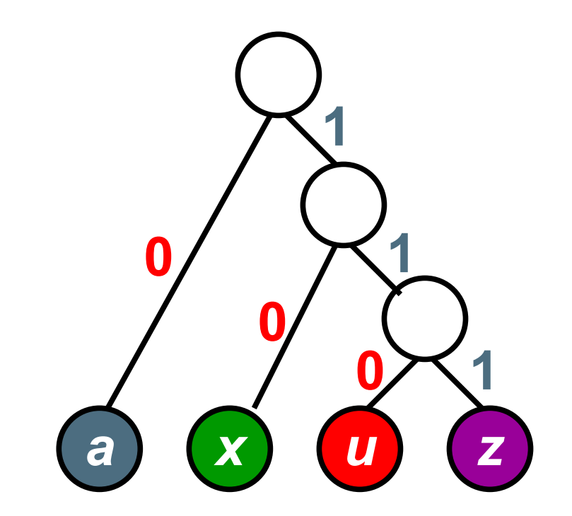

树（中）
二叉搜索树
定义
二叉搜索树（Binary Search Tree，BST），也称二叉排序树或二叉查找树，其可以为空，也可以不为空，如果不为空，满足以下性质：
- 非空左子树的所有键值小于其根节点的键值。
- 非空右子树的所有键值大于其根节点的键值。
- 左右子树都是二叉搜索树。
二叉搜索树
在树（上）中，我们已经给出了二叉树的定义，这里只要让二叉树派生出子类二叉搜索树即可。
class BST : public BinTree {
public:
TreeNode* find(int x);
TreeNode* findMin();
TreeNode* findMax();
void insert(int x);
bool remove(int x);
};具体函数的实现
查找函数 find()
从根节点开始，如果树为空，返回 nullptr，如果树不为空，则根节点关键字与待查元素比较，如果小于待查元素，在右子树中继续搜索，大于则在左子树中继续搜索，如果相等，返回该节点的指针。
TreeNode* BST::find(int x) {
TreeNode* tmpRoot = root;
while (tmpRoot != nullptr) {
if (tmpRoot->data > x) {
tmpRoot = tmpRoot->left;
}
else if (tmpRoot->data < x) {
tmpRoot = tmpRoot->right;
}
else {
break;
}
}
return tmpRoot;
}查找最大和最小元素 findMin() 和 findMax()
根据二叉搜索树的特性，其最小元素一定在树的最左边的叶节点，最大元素一定在树的最右边的叶节点。
TreeNode* BST::findMax(){
TreeNode* tmpRoot = root;
while (tmpRoot != nullptr) {
tmpRoot = tmpRoot->right;
}
return tmpRoot;
}
TreeNode* BST::findMin() {
TreeNode* tmpRoot = root;
while (tmpRoot != nullptr) {
tmpRoot = tmpRoot->left;
}
return tmpRoot;
}插入函数 insert()
首先，插入的元素如果不在树中，那么一定会插在叶节点，此时我们使用类似查找的方式，不断向下搜，直至该节点为空即可，这里的难点是，由于我们的二叉树节点没有设置父节点指针，只能从上往下单向访问，因此此时在迭代的过程中，需要同时记住父节点和子节点，防止无法修改父节点指针。
非递归版：
bool BST::insert(int x) {
TreeNode* parent = root;
if (parent == nullptr) {
root = new TreeNode(x);
return true;
}
TreeNode* left = root->left;
TreeNode* right = root->right;
while (true) {
if (parent->data > x) {
if (left == nullptr) {
parent->left = new TreeNode(x);
return true;
}
parent = left;
left = parent->left;
right = parent->right;
}
else if (parent->data < x) {
if (right == nullptr) {
parent->right = new TreeNode(x);
return true;
}
parent = right;
left = parent->left;
right = parent->right;
}
else {
return false;
}
}
}删除函数 remove()
首先需要找到要删除的节点（此时不能简单的使用 find() 方法，因为这里涉及修改父节点的指针，直接使用 find() 无法找到父节点），此时根据删除的节点不同，有三种情况。
-
要删除的是叶子节点：直接删除即可。
-
要删除的节点只有一个子节点：只要用子节点替代它即可。
-
要删除的节点有左右两个子节点：
此时应该注意，删除后树的形状并不是砍掉了一条枝，而只是少了一个叶子节点，因此，应该寻找一个叶子节点代替该节点，而代替的节点应该保持比左子树上的所有元素都大、且比右子树上的所有元素都小的特性，此时只能取左子树上的最大元素或右子树上的最小元素。
这里非递归版太难写了，直接写递归版：
TreeNode* BST::remove(int x, TreeNode* node) {
TreeNode* tmp;
if (node == nullptr) {
return nullptr;
}
else if (node->data > x) {
node->left = remove(x, node->left);
//这里注意，写该函数时，返回值十分重要，这里继续递归时，如果遇到目标节点，删除后还将返回替代节点
//正好将该节点与父节点串起来
}
else if (node->data < x) {
node->right = remove(x, node->right);
}
else { //找到待删除节点
if (node->left && node->right) {
BST* leftChild = new BST();
leftChild->root = node->left;
tmp = leftChild->findMax(); //创建左子树，并找到其中最大的节点。
node->data = tmp->data;
node->left = remove(node->data, node->left);
//还要在左子树中递归删除该节点，此时由于该节点是最大的，子节点数一定小于等于1，不会无限递归
}
else {
tmp = node;
if (node->left == nullptr) {
node = node->right;
}
else {
node = node->left;
}
delete tmp;
}
}
return node;
}堆
堆的用途
堆（Heap）可以用于实现优先队列（Priority Queue），出队按照元素的关键字大小而不是入队顺序。
其插入和删除都是 O(logn) 的复杂度。
堆的表示和特性
堆可以用完全二叉树表示。
其具有两个特性：
-
结构性：堆是用数组表示的完全二叉树。
-
有序性：任一结点的关键字大于等于其子树所有节点的最大值（或小于最小值）。
由此分有最大堆（大顶堆）和最小堆（小顶堆）两种堆。
下面以最大堆为例，给出堆的实现。
template <typename T>
class MaxHeap {
int maxSize;
int size = 0;
T* data;
public:
MaxHeap(int maxSize); //建一个空的最大堆，之后挨个插入，复杂度为 O(NlogN)
MaxHeap(T a[], int maxSize); //从数组a中拷贝maxSize个元素建堆，复杂度为 O(N)
bool insert(T ele); //插入元素ele
T removeMax(); //取出最大的元素
void percDown(int p); //建堆时辅助构造函数用
};具体函数实现
建空堆的构造函数
template <typename T>
MaxHeap<T>::MaxHeap(int maxSize)
: maxSize(maxSize) {
data = new T[maxSize];
}插入函数 insert()
由于最大堆是用数组表示的完全二叉树，因此插入在树的结构上体现在数组多了第 size + 1 个元素。这里把该元素先放在这个位置（也即 data[size] 处），之后逐级向上与父元素交换（如果比父元素大的话）即可，这里需要注意，如果插入的元素比所有元素都大，应注意防止越界。
template <typename T>
bool MaxHeap<T>::insert(T ele) {
if (size == maxSize) {
return false; //堆满
}
int i; //i此时指向插入后的最后一个元素
for (i = size; i >= 1 && data[(i - 1) / 2] < ele; i = (i - 1) / 2) {
data[i] = data[(i - 1) / 2]; //向下过滤
}
data[i] = ele;
size++;
return true;
}注：在具体实现时，不是采用两两交换的形式，因为这样需要花费两倍的时间，直接采用类似冒泡排序的方式，先为该元素找到合适的位置，再一次性赋值。
删除函数 removeMax()
删除时，堆顶的元素才是最大的元素，但树中被“删除”的是 data[size - 1] 处的元素，因此我们可以把 data[size - 1] 处的元素放到堆顶，然后类似于插入时，逐级向下与子元素交换（如果比子元素小的话）即可。
template <typename T>
T MaxHeap<T>::removeMax() {
T maxEle = data[0];
T tmp = data[--size];
int parent, child; //需要从0开始向下过滤，这里让child指向parent左右儿子中较大的那个
for (parent = 0; parent * 2 + 1 < size; parent = child) {
//开始时，child指向左孩子，循环当没有左孩子时结束,判断条件应该是parent*2+1<size，而不是child<size
child = parent * 2 + 1;
if (child + 1 < size && data[child + 1] > data[child]) { //如果有右孩子且右孩子比左孩子大
child++;
}
if (data[child] <= tmp) {
//说明不必再向下过滤tmp，用小于等于符，可以使得过滤次数减少
break;
}
else {
data[parent] = data[child];
}
}
data[parent] = tmp;
//注意，该行在循环结束后再写，而不是在break前写，因为循环有可能不是因为if退出，而是因为循环条件不再满足而退出。
return maxEle;
}由已有的 N 个元素建堆的构造函数
这里把 N 个元素封装在数组中，重点是建堆的思路。
思路
对于已给的 N 个元素，如果按照依次插入的方式，时间复杂度为 $O(NlogN)$，但是如果把 N 个元素先按顺序插入堆维护的数组中，再进行调整，可以达到 $O(N)$ 的效率，思路如下：
由于堆也是树，可以把堆看成由根节点和两个子堆组成，如果我们可以把刚开始时两个无序的左右子树调成堆，那么对于根节点，只要用类似于删除元素的方式将其向下过滤，即可得到一个堆，那么我们依次向下分解，由于最后一层已经是只有一个根节点的树，是最小的堆，所以我们可以从倒数第二层入手，把该层全部调成堆，之后再逐层向上调节。
复杂度分析
对于一个 N 个元素的堆，最后一层节点数小于 N/2；倒二层节点数小于 N/4，以此类推。而调节倒数第 $i$ 层时，需要调节的次数为
(i-1)*第 i 层节点数目
于是我们得到
$$
T(N)<\frac{n}{4}*1+\frac{n}{8}*2+\frac{n}{16}3+…+\frac{n}{2^k}(k-1)
$$
不妨先取等号，此为差比数列求和，用错位相减法可以得到 $T(N)=O(N)$
代码
这里涉及到一个下滤操作（也即把以某个节点为根的子堆调整为堆的操作），将其作为一个方法在函数内调用。
template <typename T>
void MaxHeap<T>::percDown(int p) { //将以data[p]为根节点的子堆调整为堆。思路与删除相同
int x = data[p];
int parent = p, child = parent * 2 + 1;
for (; parent * 2 + 1 < size; parent = child) {
child = parent * 2 + 1;
if (child + 1 < size && data[child + 1] > data[child]) {
child++;
}
if (data[child] <= x) {
break;
}
else {
data[parent] = data[child];
}
}
data[parent] = x;
}之后从倒数第二层最后一个有儿子的节点开始的每个节点都要调：
template <typename T>
MaxHeap<T>::MaxHeap(T a[], int maxSize)
: size(maxSize), maxSize(maxSize) {
data = new T[maxSize];
memcpy(data, a, maxSize * sizeof(T));
for (int i = maxSize / 2 - 1; i >= 0; --i) {
percDown(i);
}
}哈夫曼树与哈夫曼编码
案例
如果要对字符进行编码，使得某个字符串的存储空间最少，这时如果采用不等长编码，应该使出现频率高的字符用的编码短些，出现频率低的字符编码长些。
哈夫曼树的定义
带权路径长度
带权路径长度（WPL，Weighted Path Length）：设二叉树有 n 个叶节点，每个叶节点带有权值 $w_k$，从根节点到每个叶结点的长度为 $l_k$，定义 $WPL=\sum_{k=1}^n\limits w_kl_k$。
哈夫曼树
哈夫曼树即 WPL 最小的二叉树。
哈夫曼树的构造
采用贪心思想，把每个叶节点最开始看成一棵树，每次合并权值最小的两棵树，这里树的权值定义为所有叶节点的权值之和，显然我们应该把所有的树都丢进一个优先队列，该队列按权值从小到大排列，每次从队首取出两棵树进行合并，再放入队列中，也即需要维护一个最小堆。
代码（这里为了简化问题，没有使用模板）：
class TreeNode {
public:
int weight;
TreeNode* left;
TreeNode* right;
TreeNode() {
left = right = nullptr;
}
TreeNode(int data)
: weight(data) {
left = right = nullptr;
}
TreeNode(TreeNode* t1, TreeNode* t2) {
weight = t1->weight + t2->weight;
left = t1;
right = t2;
}
};
class MinHeap {
TreeNode** nodeList; //一个二级指针，其存储的内容全部是一级指针（也即树节点）
int size;
int maxSize;
public:
int getSize() {
return size;
}
void percDown(int p) {
int x = nodeList[p]->weight;
int parent = p, child;
for (; parent * 2 + 1 < size; parent = child) {
child = parent * 2 + 1;
if (child + 1 < size && nodeList[child + 1]->weight < nodeList[child]->weight) {
child++;
}
if (nodeList[child]->weight >= x) {
break;
}
else {
nodeList[parent]->weight = nodeList[child]->weight;
}
}
nodeList[parent]->weight = x;
}
MinHeap(int maxSize)
: maxSize(maxSize), size(maxSize) {
nodeList = new TreeNode*[maxSize];
int weight;
for (int i = 0; i < maxSize; ++i) {
cin >> weight;
nodeList[i] = new TreeNode(weight);
}
for (int i = maxSize / 2 - 1; i >= 0; --i) {
percDown(i);
}
}
void insert(TreeNode* node) {
int i = size;
size++;
for (; i >= 1 && nodeList[(i - 1) / 2]->weight > node->weight; i = (i - 1) / 2) {
nodeList[i] = nodeList[(i - 1) / 2];
}
nodeList[i] = node;
}
TreeNode* removeMin() {
TreeNode* node = nodeList[0];
TreeNode* tmp = nodeList[--size];
int parent, child;
for (parent = 0; parent * 2 + 1 < size; parent = child) {
child = parent * 2 + 1;
if (child + 1 < size && nodeList[child + 1]->weight < nodeList[child]->weight) {
child++;
}
if (nodeList[child]->weight >= tmp->weight) {
break;
}
else {
nodeList[parent] = nodeList[child];
}
}
nodeList[parent] = tmp;
return node;
}
};
class HuffmanTree {
public:
MinHeap* h;
TreeNode* root;
HuffmanTree(int maxSize) {
h = new MinHeap(maxSize);
TreeNode *t1, *t2, *t;
while (h->getSize() >= 2) {
t1 = h->removeMin();
t2 = h->removeMin();
t = new TreeNode(t1, t2);
h->insert(t);
}
root = h->removeMin();
}
};哈夫曼树的特点
- 没有度为 1 的节点。
- n 个叶结点的哈夫曼树共有 2n - 1 个节点。
- 哈夫曼树的任意非叶节点的左右子树交换后仍是哈夫曼树。
- 对同一组权值，存在不同构的两棵哈夫曼树（权值最小的节点有大于等于两个时，取的节点不同，树就不同构）。
哈夫曼编码
在之前的案例中介绍了哈夫曼编码：采用不等长编码，频率高的编码短，频率低的编码长。
对于不等长编码，需要避免二义性（指解码时），可以采用前缀码（Prefix Code）的方式：任何字符的编码都不是另一字符编码的前缀。
可以用二叉树进行编码：左右分支代表 0 和 1，字符只在叶结点上，例如：

此时编码如下：
a：0
x：10
u：110
z：111
借助哈夫曼树，我们可以每次选择使用频率最低的两个字母（树），最后构造出哈夫曼树。
集合
这里用树结构表示的集合是并查集，也即只有合并和查找功能的集合。
并查集通常用数组表示，每个元素除了自身的 data 域外，还存储其父元素在数组中的下标，集合的根节点下标取为负数。同根的元素视为属于同一个集合。
集合和集合节点的表示
template <typename T>
class SetNode {
public:
T data;
int parent;
};
template <typename T>
class Set {
SetNode<T>* ptrNodes;
public:
int findRoot(int element);
void merge(int element1, int element2);
//上面所有的参数都指下标
};并查集操作
查找
即查找某个元素所在的集合（用根节点表示），显然，简单的算法只要一直向上查找父亲，直到某个元素其父元素下标为负数，即为根节点。
合并
即合并两个集合，只要把其中一个集合根节点的父元素设为另一个集合的根节点即可。
显然，由上面的思路可知，并查集的效率取决于树高，如果树高小，效率就高。因此，下面介绍两种优化查找和合并的算法。
路径压缩
先上代码，再写思路：
template <typename T>
int Set<T>::findRoot(int element) {
if (ptrNodes[element].parent < 0) {
return element;
}
else{
return ptrNodes[element].parent = findRoot(ptrNodes[ptrNodes[element].parent]);
}
}如果一个集合中，某个集合从根节点到叶节点（集合也是树）的路径很长（例如集合退化为链表时），此时查找（找根）的效率会极其低下，路径压缩是一种在查找的过程中缩短根节点到叶节点路径的方式，由于在并查集中，我们只关心两个元素是否属于同一个集合，因此对于某个节点，其父节点究竟是集合中的哪一个节点并不重要，因此我们可以在查找的过程中，通过一个递归语句，把该条路径上经过的所有节点的父节点全部改为根节点，可以大大的减小树高。
按秩归并
在合并的过程中，如果把小集合并入大集合（即小树并入大树），可以减小树高（显然）
这里如果我们用集合中元素的个数表示集合，只要把该个数存在根节点的父元素中即可，其父元素下标为 -n，其中 n 为该集合元素的个数。
代码：
template <typename T>
void Set<T>::merge(int element1, int element2) {
int root1 = findRoot(element1);
int root2 = findRoot(element2);
if (root1 == root2) {
return;
}
if (ptrNodes[root1].parent < ptrNodes[root2].parent) {
ptrNodes[root1].parent += ptrNodes[root2].parent;
ptrNodes[root2].parent = root1;
}
else {
ptrNodes[root2].parent += ptrNodes[root1].parent;
ptrNodes[root1].parent = root2;
}
}其中应该注意，同根时不要进行合并，否则会出现错误。
注：上面的操作省略集合的构造过程，只重点介绍并和查的过程。